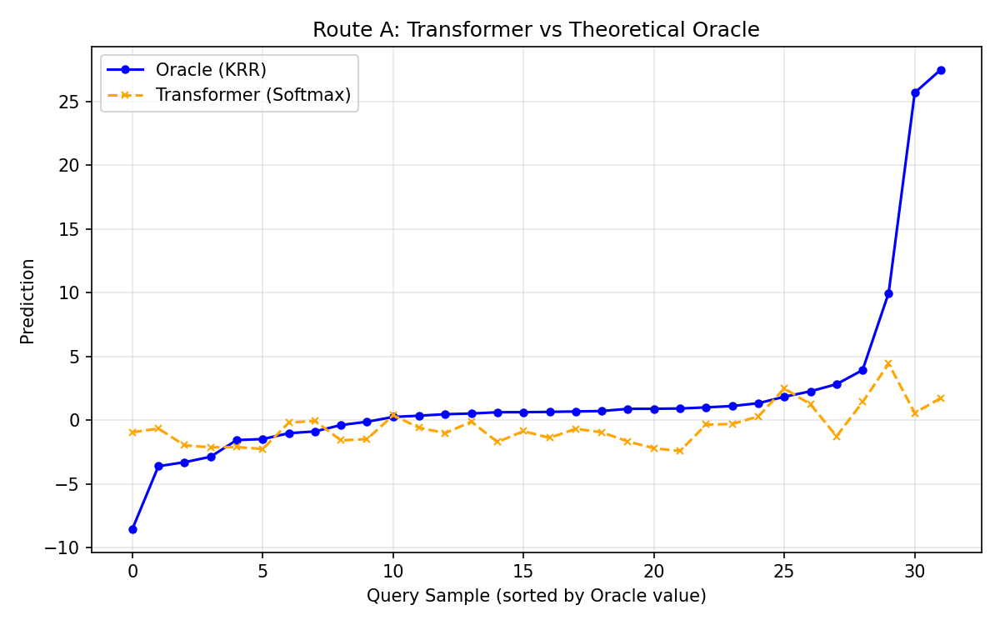
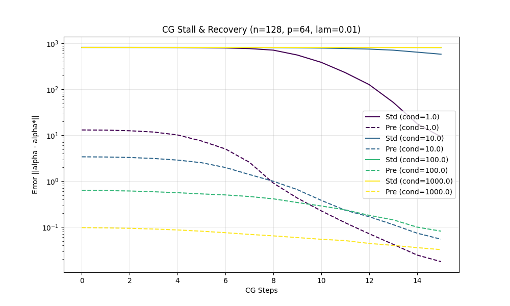
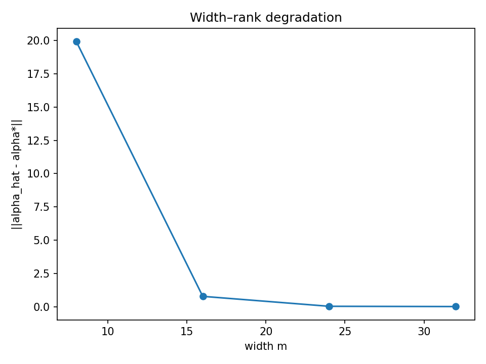

Worked Demo: From Theory to Practice
This walkthrough demonstrates how the MetaRep project validates the hypothesis that Transformers implement optimization algorithms (KRR and PCG).
1. The Hypothesis
We claim that a Transformer's forward pass on a sequence of examples: $$ (x_1, y_1), (x_2, y_2), \dots, (x_{query}, ?) $$ Is mathematically equivalent to running an optimization algorithm on the kernel matrix \(K_{ij} = \langle \phi(x_i), \phi(x_j) \rangle\).
2. Route A: The Softmax Connection (Minimal Demo)
The simplest case is Route A, where a single Softmax attention layer solves Kernel Ridge Regression with an exponential kernel.
Code Implementation
We implemented this in experiments/route_a_minimal.py. The core logic is:
# 1. Compute Kernel via Softmax
# S_sq = (Q_supports @ Q_query.T) / tau
# Attention = softmax(S_sq)
# ... (with re-normalization trick)
# 2. Compare to Oracle KRR
# K = exp( (phi @ phi.T) / tau )
# alpha = inv(K + lambda*I) @ y
# f_oracle = k(x).T @ alpha
Resulting Alignment
Running the experiment produces this alignment plot. The Orange line (Softmax Model) recovers the geometry of the Blue line (Oracle KRR). Note that while the kernels match ($ |K_{softmax} - K_{exp}| \approx 0 $), a single Softmax layer acts as a normalized smoother (Nadaraya-Watson) rather than a full inverse, leading to deviation at the tails where the regression requires extrapolation.

3. Route B: The Linear Attention PCG
For linear attention, the model must be iterative. Each layer performs one step of Preconditioned Conjugate Gradient.
The Failure Mode Test
Standard Gradient Descent stalls when the data is "ill-conditioned" (football shaped loss landscape). PCG fixes this by reshaping the landscape (preconditioning).
We tested this in experiments/failure_modes/ill_conditioned.py.
- Standard CG (Solid Lines): Stalls when condition number \(\kappa\) is high (100, 1000).
- Preconditioned CG (Dashed Lines): Convergence is restored, independent of \(\kappa\).

4. Width vs. Rank
Finally, what happens if the model is too small?
Theory predicts it acts like a low-rank sketch. We verified this in experiments/width_rank.py.
- X-axis: Model width \(m\).
- Y-axis: Prediction Error.
- Curve: The spectral tail sum \(\sum_{i>m} \lambda_i\).
The empirical error (dots) hugs the theoretical bound (line).

Try it yourself
You can reproduce all these figures with a single command: